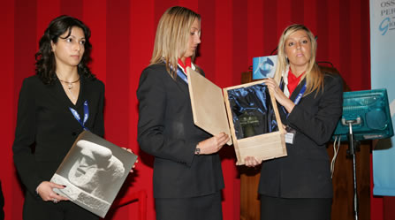
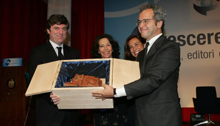

GLI AUTORI DELLE SCULTURE

Pietro Cascella
Pietro Cascella nasce a Pescara il 2 febbraio
1921; vive nel castello di Verrucola, Fivizzano
(Massa Carrara). Comincia ad interessarsi di pittura
ancora giovanissimo, seguendo gli interessi del
padre Tommaso. Nel 1943 partecipa alla IV Quadriennale
di Roma e cinque anni più tardi alla I
Biennale di Venezia del periodo post-bellico.
Nel 1938 si trasferisce a Roma dove segue i corsi
dell'Accademia di Belle Arti con Ferruccio Ferrazzi.
Negli anni che seguono, insieme al fratello Andrea,
lavora in una fornace per la ceramica a Roma a
Valle dell'Inferno. Nei primi anni Cinquanta,
sempre con Andrea, realizza opere di ceramica
anche di grande formato.
Nel 1956 partecipa alla XXVIII Biennale di Venezia.
E' del 1958 il progetto iniziale per il monumento
di Auschwitz, concepito insieme al fratello Andrea
e all'architetto La Fuente, che nove anni dopo
verrà realizzato su un nuovo disegno ideato
interamente da Pietro Cascella.
Nello stesso periodo lavora a quadri-scultura
le cui tematiche surreali si approfondiscono in
seguito all'incontro con Sebastian Matta. La sua
ricerca si orienta quindi verso la pietra e il
marmo, materiali in cui realizza la gran parte
delle sue opere monumentali.
Numerose sono le sue mostre personali, tra le
quali nel 1962 una esposizione di ceramica è
stata inaugurata alla Galleria dell'Obelisco di
Roma, nello stesso anno segue una personale alla
Galleria del Milione a Milano, nel 1965 alla Galleria
Bonino a New York, nel 1966 è presente
con una sala personale alla Biennale di Venezia
(come pure nel 1972), poi nel 1968 alla Galèrie
du Dragon a Parigi e al Musée d'Ixelles
a Bruxelles, nel 1971 al Musée d'Art Moderne
de la Ville de Paris, alla Galèrie Buchbolz
a Monaco in Baviera nel 1979, nel 1984 ai Magazzini
del Sale a Siena. La sua ricerca si orienta soprattutto
verso opere a carattere monumentale.
Risalgono agli anni Settanta, per esempio, l'Arco
della Pace a Tel Aviv, Omaggio all'Europa a Strasburgo,
il Monumento a Giuseppe Mazzini a Milano, Sole
e Luna a Riad, Bella Ciao a Massa. Tra le opere
monumentali degli anni Ottanta vi sono Cento Anni
di lavoro allo stabilimento Barilla a Parma, il
monumento a Due Carabinieri caduti a Monteroni
d'Arbia, la Nave per la città di Pescara
e la piazza di Milano Tre.
Negli anni Novanta realizza grandi opere come
la Volta Celeste ad Arcore (Milano) insieme ad
altre sculture come fontane e colonne simbolo,
l'Agorà all'Università di Chieti,
il Monumento della Via Emilia a Parma, la Porta
della Sapienza a Pisa, l'Ara del Sole ad Ingurtosu
in Sardegna, il Teatro della Germinazione nel
Parco Nazionale d'Abruzzo.
Nel 1999 ha realizzato la fontana della città
di Chiavari e la fontana per la Baraclit nel Casentino,
in Toscana.
Si inaugura nell’ottobre del 2000 a Venezia
la personale “Le rive congiunte” e
nel mese di novembre viene realizzata una importante
mostra presso la Camera dei Deputati a Roma. Nel
marzo 2001 a Pontedera si inaugura la mostra al
Museo Piaggio, Giovanni Alberto Agnelli; e nel
mese di luglio a Pietrasanta la mostra “La
scultura un sogno di pietra” con opere in
Piazza del Duomo e Chiesa di S. Agostino. Mostra
presso la galleria Guastalla&C. a Forte dei
Marmi.
E’ del 2003 la mostra presso la Segreteria
Generale Circolo Artistico, Premio Marconi 2003
a Bologna, e la mostra presso la Galleria Guastalla
Centro Arte, Livorno. Riceve, a Pietrasanta, il
Premio internazionale Rosselli per la Scultura
e a Bologna il Premio Guglielmo Marconi per la
Comunicazione.

Cordelia
Von Den Steinen
mi racconto
Sono nata a Basilea nel 1941. Veramente non era
un bel momento per venire al mondo, ma la guerra
e le minacciose persecuzioni si erano fermate
a tre chilometri dalla nostra casa, immersa nel
suo magnifico giardino.
Così ho avuto una infanzia pacifica insieme
alle mie due sorelle poco più grandi di
me.
Mi piaceva riempire la casa di fogli disegnati
e dipinti, era anche un modo per crearmi fieramente
uno spazio in una casa dove tutti, salvo me, stavano
sempre con un libro davanti, uno spazio che mi
legava in modo privilegiato a mia nonna che da
ragazza aveva dipinto con passione e perizia.
Le mie prime uscite da sola erano per andare in
città da una Signora, che si era offerta
a darmi lezioni di modellato, avevo sei anni e
prendere da sola i mezzi pubblici era una bella
avventura. Ma io non avevo capito che cosa volesse
la Signora da me e tantomeno lei che cosa avesse
in mente quella bambina che aveva di fronte.
Così, dopo qualche settimana, finirono
le lezioni che mi rimasero nella memoria per il
senso di avventura e di indipendenza che avevo
provato da sola lontano da casa.
Continuavo a disegnare sempre, ma era durante
gli anni del liceo che mi tornava alla mente la
creta. Modellavo ritratti e figure e mia nonna
mi installò uno studietto nella rimessa
del suo giardino.
Comunicai ai miei genitori la mia determinazione
di diventare scultrice, al che mio padre si fece
sfuggire un insolito: “Gesù!”.
Concordammo che avrei comunque conseguito gli
studi per raggiungere l’abilitazione all’insegnamento
di materie artistiche.
Così frequentai per tre anni la scuola
di arte e mestieri a Basilea. I professori erano
quasi tutti pittori astrattisti ma l’insegnamento
era rigorosamente fondato sulle tradizioni dello
studio dal vero. Importanti furono le lezioni
di storia dell’arte di Georg Schmidt, direttore
del Museo d’Arte di Basilea, per la sua
grande apertura, per me liberatoria, e la sua
totale mancanza di schemi preconcetti. Nel 1963
mi iscrissi all’Accademia di Brera, consideravo
un grande privilegio poter studiare con Marino
Marini.
Le sue apparizioni non erano quotidiane ma la
sua attenzione per il mio lavoro era costante.
Disse poche cose ma credo di ricordarle tutte.
Presente tutti i giorni, con ironia, era invece
l’allora assistente Alik Cavaliere. Marini
mi consigliò di andare a Roma, città
così plastica dove ovunque volgi lo sguardo
vedi una colonna, un fregio, una scultura.
A Roma, per la prima volta, lavorai liberamente
come scultrice. Per fortuna avevo subito vinto
la borsa federale svizzera per la scultura e un’altra
borsa di studio che mi consentirono questo esperimento.
Decisi di passare l’estate del 1965 a Carrara
per imparare a lavorare il marmo. Era allora che
ho incontrato Pietro Cascella. Nel 1966 ci siamo
trasferiti in Versilia. Compresi che il marmo
non era la mia materia e ricominciai a modellare.
Vivere in una zona del marmo e delle fonderie
comportava la frequentazione quotidiana e amichevole
con molti scultori tra i quali ricordo in particolare
Lipchitz, Moore, Ipousteguy, Penalba, Nivola.
Per l’anno 1970-71, grazie ad una borsa
di studio, ebbi l’opportunità di
usufruire di uno studio alla Cité Internationale
des Arts a Parigi.
Era in quell’anno che, pur non dimenticando
le preziose lezioni sia di Marini che di Pietro,
ho trovato una mia autonomia di espressione. Più
o meno da quella epoca ho incominciato ad esporre
regolarmente. Nel 1972 è nato nostro figlio
Jacopo che è sempre stato presente nei
nostri studi dove si dava da fare con la creta
e i colori.
Oggi Jacopo è pittore. Dalla Versilia ci
siamo trasferiti nel 1977 in Lunigiana al Castello
della Verrucola dove, con qualche interruzione
a Milano, viviamo oggi e dove abbiamo anche i
nostri studi. Nel 1992 sono stata eletta membro
del Künstlersonderbund Deutschland, una associazione
di artisti tedeschi di orientamento figurativo.
Questa appartenenza mi ha dato una apertura verso
lo scenario d’arte tedesco e in particolare
verso quello di Berlino.
In sintonia coi tempi europei ho potuto così
partecipare nel corso degli anni, a mostre dedicate
ad artisti svizzeri, altre ad artisti italiani,
altre ancora a quelli tedeschi. Nello stesso 1992
sono stata nominata dall’Accademia Nazionale
San Luca.
Mi è capitato anche di fare delle opere
pubbliche come le fontane a Basilea, a Riad, a
Seravezza, le grandi terrecotte nell’Università
di Chieti e all’Aeroporto di Parma, le pietre
a Vencâc in Jugoslavia, a Tuoro nell’ambito
dell’opera collettiva di colonne e ora a
Rapolano, ma il mio lavoro costante si svolge
attraverso gli anni come un diario di creta, come
annotazione degli avvenimenti dei nostri giorni.
|